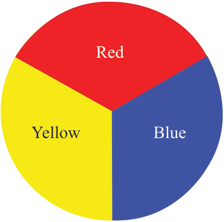

result of tinting or shading.
The processes occur when colours are applied in the painting.
The brightness of colour is termed high intensity while the dullness is low intensity.
Note: The terms intensity and value, can be used interchangeably but they are not similar.
The difference between them is that value is changed or adjusted by adding black or white to a hue while intensity is changed by mixing a colour with its complementary in the colour wheel or grey colour.
Colour wheel
A colour wheel is an illustrative arrangement of colours in a circle which is intended to show the relationship between colours.
A colour wheel helps to understand the origins of different colours.
In the wheel, some colours are natural and others are made by mixing two or more natural colours.
Types of colours
There are three groups of colours regarding their formation or origin.
These are; primary, secondary and tertiary or intermediate colours.
Primary colours:
Red, yellow and blue are primary colours or hues.
They are equally placed in the colour wheel.
Primary colours are made or extracted from nature, such as minerals and plants.
These colours can be mixed in varying proportions to produce all other colours.
However, they cannot be made by mixing any other colours.
Figure 3.4 shows the colour wheel of primary colours.

Secondary colours:
These are colours made by mixing an equal amount of two primary colours.
These secondary colours are purple, orange and green.
Figure 3.5 shows examples of mixtures of two primary colours to get a secondary colour.